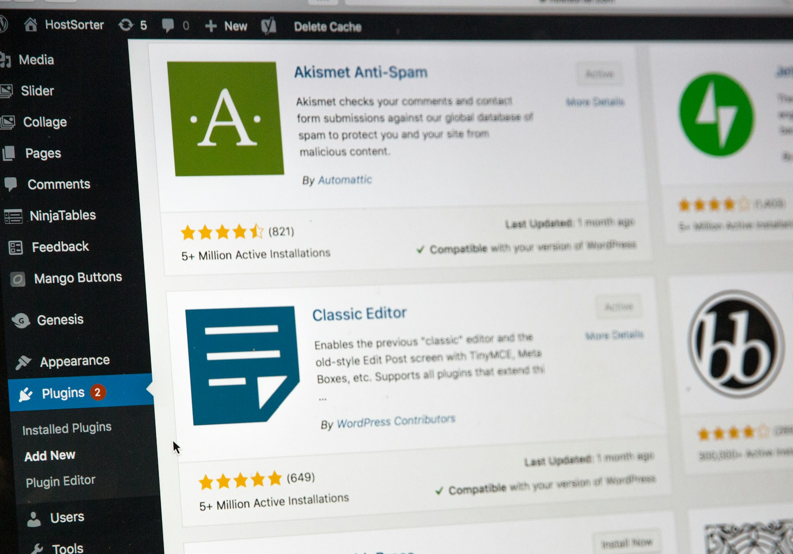

TL;DR
Freelancers can significantly boost productivity with free tools that aid in communication, project management, time tracking, invoicing, and storage. Proper selection and usage of these tools can lead to better organization and efficiency.

Understanding the Landscape of Free Tools
In the evolving world of freelancing, utilizing free tools can make a significant difference in your productivity and efficiency. There are countless apps and platforms available, catering to a variety of freelance needs. These tools can help with project management, communication, invoicing, and more. Understanding what’s available is crucial. Free doesn’t mean low quality; many tools are robust enough to serve freelancers effectively. It’s important to assess your needs first. What tasks consume most of your time? Look for tools that address those specific challenges. Prioritize ease of use and features that resonate with your workflows. This guide will help you identify what types of tools you need and introduce you to some industry favorites.
Communication Tools: Connecting with Clients
Effective communication is fundamental for any freelancer. Free tools like Slack, Zoom, and Google Meet can enhance how you interact with clients and colleagues. These platforms offer messaging, video calls, and file sharing, essential for collaboration. Start with a tool that best fits your preference. Slack is ideal for ongoing communication, while Zoom excels in video conferencing. Both have free tiers that provide necessary features. Make sure to explore integrations with other tools you use, such as calendars. This will help streamline meetings and maintain productivity. Be mindful of potential information overload on chat platforms. Set boundaries for your availability to ensure focused work time.
Project Management Solutions: Keep Your Work Organized
Organization is key when juggling multiple clients and projects. Tools like Trello, Asana, and ClickUp offer free versions that can help you manage tasks efficiently. Each tool has unique features, so it's crucial to explore which fits your workflow best. Trello uses boards and cards, great for visual thinkers, while Asana provides list views and timelines for detailed projects. ClickUp combines features from both but may require a steeper learning curve. Assess your needs; if you prefer a simplistic layout, Trello might suit you best. Utilize these tools not just for task tracking, but also for setting deadlines and reminders. Staying organized minimizes stress and increases your ability to meet deadlines.
Time Tracking: Monitor Your Work Hours
For freelancers billing hourly, time tracking is essential. Tools like Toggl and Clockify offer free plans that let you log hours worked on projects. This information is vital for invoicing and understanding how your time is being spent. Start by dedicating a few minutes each day to track your work. Both Toggl and Clockify are user-friendly and provide reports that can help you analyze your productivity patterns. If you find certain tasks are taking longer than expected, adjust your approach. Neglecting time tracking can lead to underestimating your work or overcommitting. Make it a habit to record your hours diligently; it ensures you're compensated fairly and helps identify areas for improvement.
Invoicing Tools: Get Paid Promptly
Creating professional invoices is crucial for freelancers. Free tools like Wave and Invoice Ninja help you create and send invoices easily. Both allow customization and track payments, which is essential for maintaining cash flow. When choosing an invoicing tool, consider ease of use and features like recurring invoices and payment processing. Wave, for instance, allows for multiple currency invoicing, which is great for international clients. Ensure you understand the local regulations for invoicing in your region. Consistent follow-ups with clients can also ensure payments are made on time, so integrate it into your workflow as necessary.
Cloud Storage: Secure Your Files
Backing up and sharing documents is essential in the freelance world. Free cloud storage options like Google Drive and Dropbox are popular for their accessibility. They allow easy sharing and collaboration on files with clients and team members. Google Drive is particularly useful if you frequently work with Google Docs or Sheets. Dropbox, on the other hand, has robust file management features. When choosing, consider how you'd like to manage your files and who you collaborate with commonly. Make it a habit to organize your files in folders to minimize confusion later. Regularly check your storage limits to ensure you have adequate space for your needs.
Common Mistakes: What to Avoid
While leveraging free tools is beneficial, there are pitfalls to avoid. Many freelancers struggle with choosing too many tools, which can lead to confusion and inefficiency. Focus on a few essential tools that cover your primary needs. Another common mistake is not mastering the tools. Take the time to explore tutorials or user forums to understand the features fully. This investment in learning can pay off in greater efficiency. Ensure you set measurable goals for using these tools; it keeps your growth on track. Finally, remember to back up your important data. Free tools may have limits or policies that could affect access to your files, so regular backups are essential.
FAQ
What are the best free tools for freelancers?
Some of the best tools include Slack for communication, Trello for project management, Toggl for time tracking, and Wave for invoicing.
How can I choose the right tools for my freelance business?
Assess your specific needs, prioritize ease of use, and start with a few essential tools before expanding.
Are free tools as good as paid ones?
Many free tools offer robust features that can meet most freelancers' needs. Paid versions may offer more advanced functionalities, but free tools can be sufficient for many.
How often should I update or review my tools?
Regularly review your tools every few months to evaluate their effectiveness and whether they still meet your needs.
Can I integrate these free tools with others I use?
Many free tools offer integration capabilities, enhancing your workflows. Always check for compatibility with your current tools.
Photo credits
- Photo 1: Stephen Phillips - Hostreviews.co.uk on Unsplash (https://unsplash.com/@hostreviews) (https://unsplash.com/photos/flat-screen-monitor-sSPzmL7fpWc)
- Photo 2: Shubham Dhage on Unsplash (https://unsplash.com/@theshubhamdhage) (https://unsplash.com/photos/purple-and-white-3-layer-cake-R5A_YlcSJwA)
- Photo 3: Kelly Sikkema on Unsplash (https://unsplash.com/@kellysikkema) (https://unsplash.com/photos/six-white-sticky-notes--1_RZL8BGBM)
- Photo 4: Markus Spiske on Unsplash (https://unsplash.com/@markusspiske) (https://unsplash.com/photos/digital-devices-showing-154916-vGnM9e-dYgA)
- Photo 5: Markus Spiske on Unsplash (https://unsplash.com/@markusspiske) (https://unsplash.com/photos/black-laptop-computer-showing-95907-IuXRooGHx9U)
- Photo 6: Andrei Lazarev on Unsplash (https://unsplash.com/@andreilazarev) (https://unsplash.com/photos/white-cloud-under-clear-sky-YXYbkRNwbkM)
- Photo 7: Power Digital Marketing on Unsplash (https://unsplash.com/@powerdigitalmarketing) (https://unsplash.com/photos/man-in-blue-long-sleeved-shirt-sitting-at-table-using-laptop-P_dneF5Pz_c)